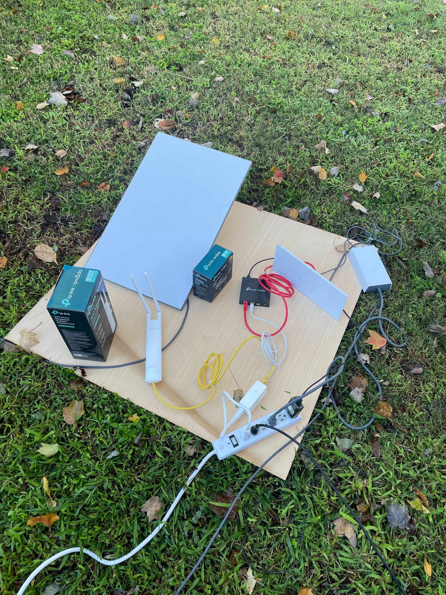

Problem
Rural Virginia residents in medically underserved areas lacked reliable broadband, cutting them off from telehealth services, health education platforms, and online training resources.
Community Impact & Needs Analysis
A real-world infrastructure and learning access initiative that brought satellite internet to medically underserved rural Virginia communities — closing the digital divide one household at a time.

Rural Virginia residents in medically underserved areas lacked reliable broadband, cutting them off from telehealth services, health education platforms, and online training resources.
Engineer a scalable satellite internet deployment using Starlink and pair it with plain-language onboarding so community members could immediately access digital health resources.

A medical desert is a geographic area where residents lack reasonable access to healthcare providers, pharmacies, or health information. In rural Virginia, this combines with:
Insight: Connectivity is not a luxury — it is the prerequisite for every other health education intervention to work.
Benefit: A community partner with no IT background can be operational within 30 minutes of hardware arrival.


Conducted site surveys and partner interviews to map coverage gaps, identify the highest-need households, and document existing device availability.
Created a network topology for each site. Designed plain-language quick-start guides and a short orientation session for community partners who would support ongoing use.
Procured and staged hardware. Produced illustrated setup guides in Adobe Illustrator mapped to low-literacy and ESL audiences.
Deployed dishes, configured local networks, and delivered on-site orientation training to community partners and residents.
Gathered post-deployment feedback on usability, connection reliability, and telehealth access. Used results to refine the guide and inform future sites.
Before any content could be designed, the real barrier had to be identified: it was not knowledge gaps — it was access gaps. This project applied front-end analysis to uncover that the learner audience literally could not reach the learning environment. Solving the infrastructure problem was the instructional design intervention.
The setup guides and orientation sessions were designed for immediate transfer. Plain-language instructions, numbered steps, and visual callouts ensured community members could self-support after the initial deployment — reducing dependency on ongoing technical assistance.